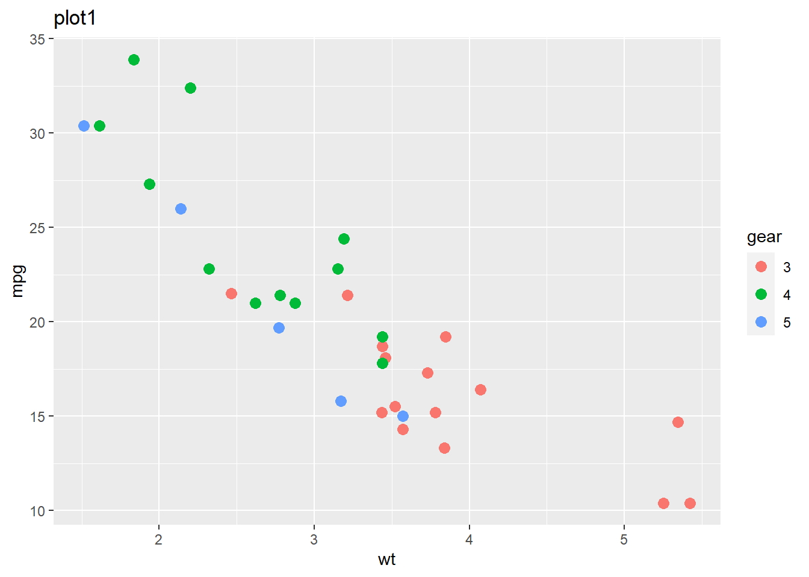
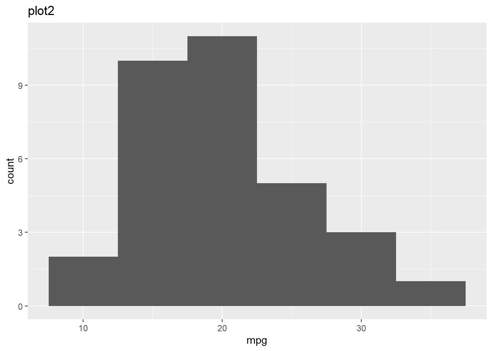
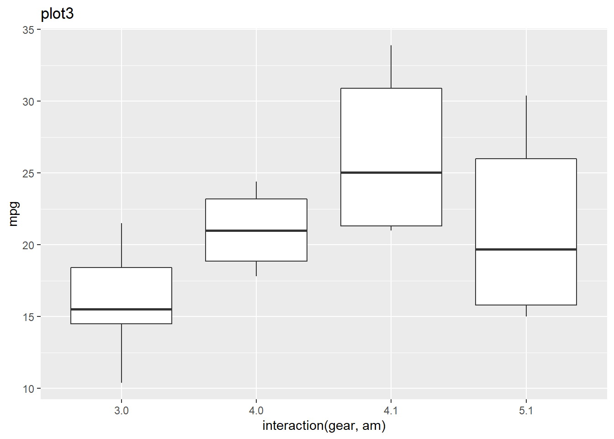
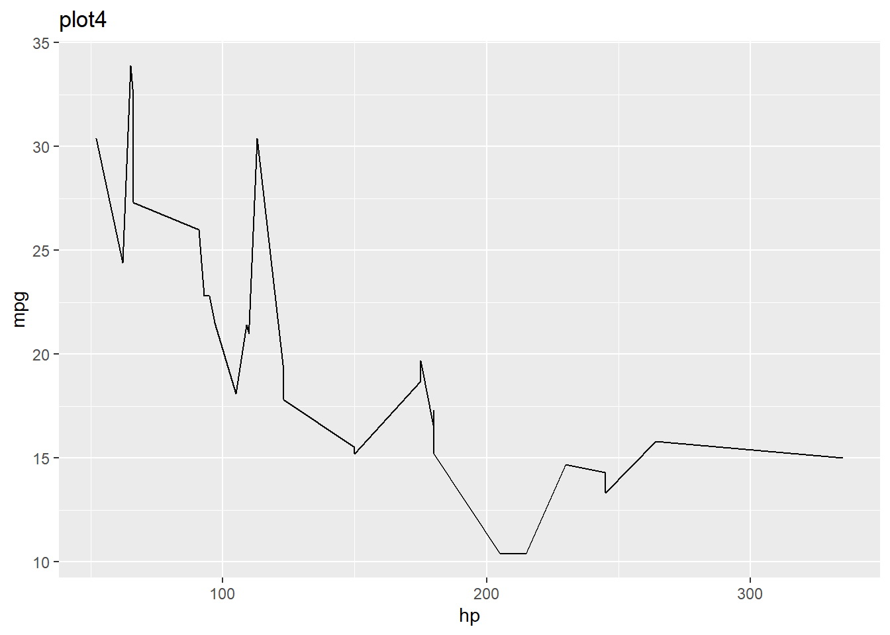
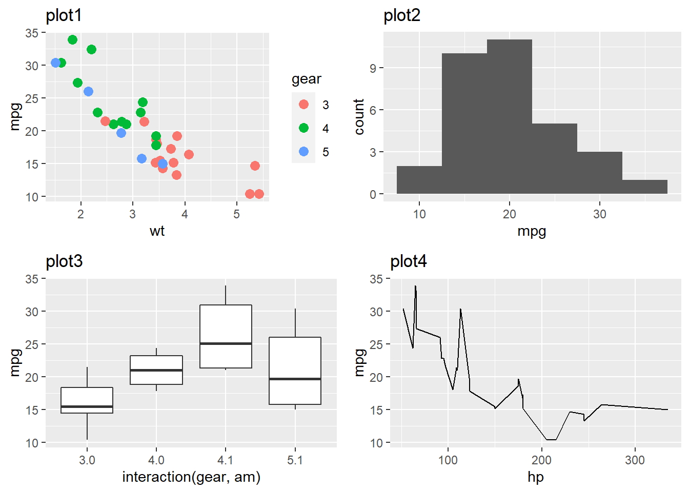
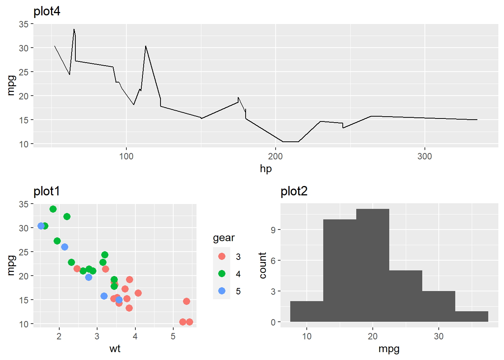
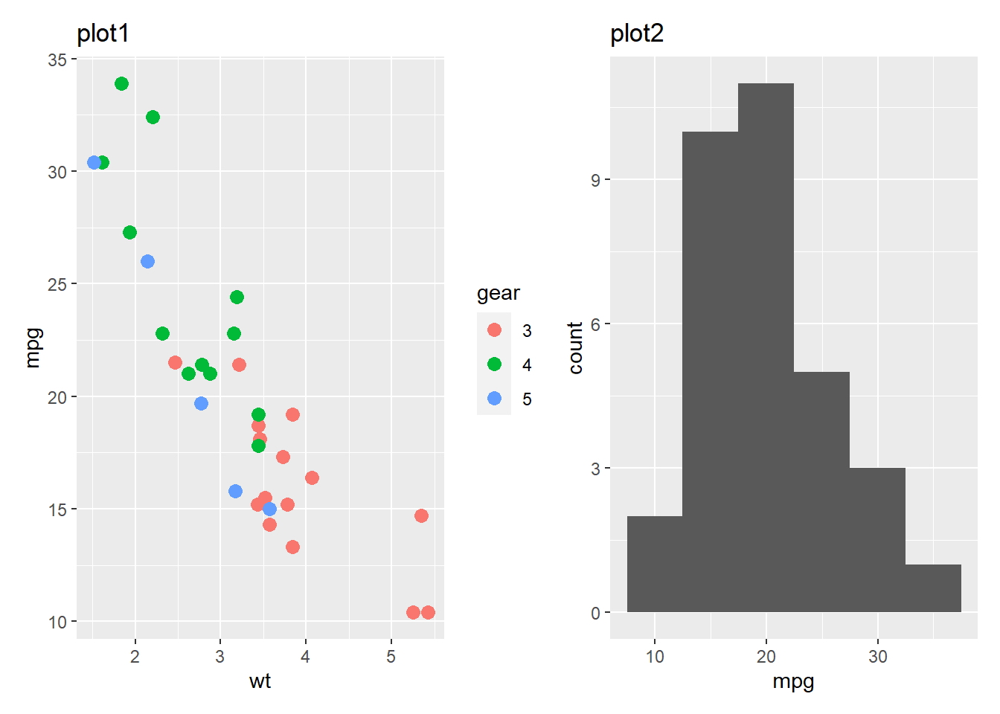
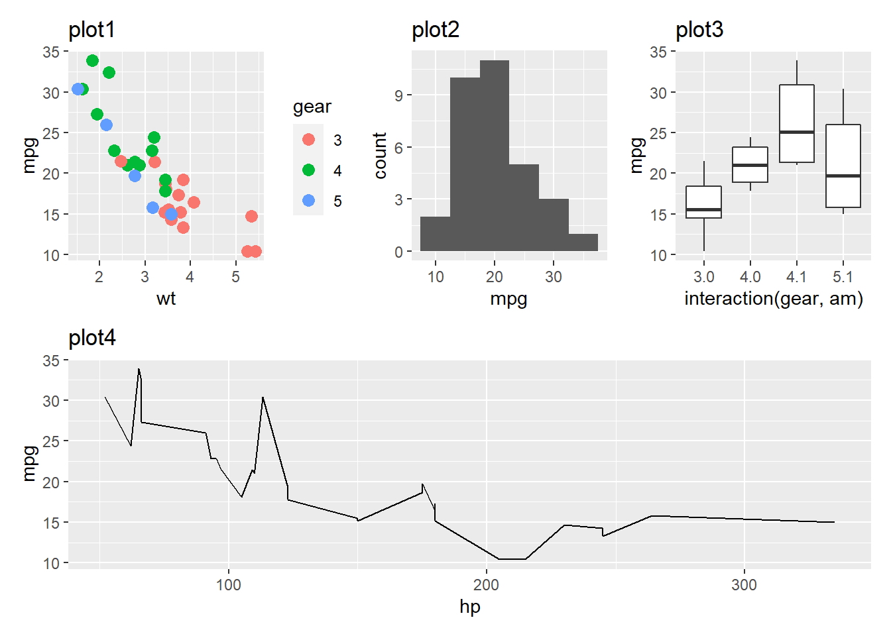

Combinación de Multiples Gráficos: Librerías ggplot2
29 de Mayo del 2020 - Jhonatan Montilla
El ggplot2 es una de las librerías de trazado más populares que se pueden aprovechar para obtener hermosos gráficos listos para publicación. El problema surge cuando desea combinar sus múltiples parcelas juntas.
Es posible que desee combinar varios gráficos para ilustrar comparaciones o mostrar información de manera agregada.
- Esquema del artículo
- Objetivo de este artículo
- Generación de parcelas
- Combinar parcelas usando el paquete de cuadrícula
- Combinar parcelas usando el paquete gridExtra
- Combinar parcelas usando el paquete ggpubr
- Combinar parcelas usando un paquete de mosaico
- Apuntar
En este artículo, aprenderemos cómo podemos aprovechar diferentes librerías de R para combinar múltiples gráficos de ggplot2.
Observación del conjunto de datos
En este artículo, vamos a utilizar el conjunto de datos incorporado en mtcars. Puede ver las primeras 6 observaciones usando la función head ().
head(mtcars)## mpg cyl disp hp drat wt qsec vs am gear carb
## Mazda RX4 21.0 6 160 110 3.90 2.620 16.46 0 1 4 4
## Mazda RX4 Wag 21.0 6 160 110 3.90 2.875 17.02 0 1 4 4
## Datsun 710 22.8 4 108 93 3.85 2.320 18.61 1 1 4 1
## Hornet 4 Drive 21.4 6 258 110 3.08 3.215 19.44 1 0 3 1
## Hornet Sportabout 18.7 8 360 175 3.15 3.440 17.02 0 0 3 2
## Valiant 18.1 6 225 105 2.76 3.460 20.22 1 0 3 1Cargando librerías relevantes
El siguiente paso es cargar las librerías relevantes usando la función library (). Primero debe instalar estas librerías usando la función install.packages ().
library(tidyverse)
library(grid)
library(gridExtra)
library(ggpubr)
library(patchwork)Fondo de datos
Los datos se extrajeron de la revista Motor Trend de EE. UU. De 1974, y comprenden el consumo de combustible y 10 aspectos del diseño y el rendimiento del automóvil para 32 automóviles (modelos 1973–74).
El marco de datos contiene 32 observaciones sobre 11 variables (numéricas).
- mpg: Millas / (EE. UU.) galón
- cilindros: Número de cilindros
- disp: Desplazamiento (pulgadas cúbicas)
- hp: potencia bruta
- drat: relación del eje trasero
- peso: Peso (1000 libras)
- qsec: tiempo de 1/4 de milla
- vs: motor (0: en forma de V, 1: recto)
- am: Transmisión (0: automática, 1: manual)
- marcha: número de marchas hacia adelante
- carb: Número de carburadores
Estructura de mtcars
Veamos el tipo de datos de cada columna usando la función glimpse () del paquete tidyverse. El paquete tidyverse contiene los paquetes base ggplot2 (usado para trazar) y dplyr (usado para manipulación de datos).
glimpse(mtcars)## Rows: 32
## Columns: 11
## $ mpg <dbl> 21.0, 21.0, 22.8, 21.4, 18.7, 18.1, 14.3, 24.4, 22.8, 19.2, 17.8,~
## $ cyl <dbl> 6, 6, 4, 6, 8, 6, 8, 4, 4, 6, 6, 8, 8, 8, 8, 8, 8, 4, 4, 4, 4, 8,~
## $ disp <dbl> 160.0, 160.0, 108.0, 258.0, 360.0, 225.0, 360.0, 146.7, 140.8, 16~
## $ hp <dbl> 110, 110, 93, 110, 175, 105, 245, 62, 95, 123, 123, 180, 180, 180~
## $ drat <dbl> 3.90, 3.90, 3.85, 3.08, 3.15, 2.76, 3.21, 3.69, 3.92, 3.92, 3.92,~
## $ wt <dbl> 2.620, 2.875, 2.320, 3.215, 3.440, 3.460, 3.570, 3.190, 3.150, 3.~
## $ qsec <dbl> 16.46, 17.02, 18.61, 19.44, 17.02, 20.22, 15.84, 20.00, 22.90, 18~
## $ vs <dbl> 0, 0, 1, 1, 0, 1, 0, 1, 1, 1, 1, 0, 0, 0, 0, 0, 0, 1, 1, 1, 1, 0,~
## $ am <dbl> 1, 1, 1, 0, 0, 0, 0, 0, 0, 0, 0, 0, 0, 0, 0, 0, 0, 1, 1, 1, 0, 0,~
## $ gear <dbl> 4, 4, 4, 3, 3, 3, 3, 4, 4, 4, 4, 3, 3, 3, 3, 3, 3, 4, 4, 4, 3, 3,~
## $ carb <dbl> 4, 4, 1, 1, 2, 1, 4, 2, 2, 4, 4, 3, 3, 3, 4, 4, 4, 1, 2, 1, 1, 2,~Clase de verificación (tipo de datos)
Aquí, vamos a utilizar las variables gear y am que son de tipo numérico. Puede verificar el tipo usando la función class ().
class(mtcars$gear)## [1] "numeric"class(mtcars$am)## [1] "numeric"Conversión a variable categórica
Para trazar, necesitamos convertir tanto gear como am en variables categóricas usando la función as.factor () ya que ambas contienen pocas categorías distintas.
mtcars$gear <- as.factor(mtcars$gear)
mtcars$am <- as.factor(mtcars$am)
class(mtcars$gear)## [1] "factor"class(mtcars$am)## [1] "factor"Preparando parcelas
Para demostrar cómo podemos combinar gráficos, primero, necesitamos generar algunos gráficos. Este gráfico puede ser cualquier gráfico como barra, dispersión, caja, línea, etc.
Plot1: Gráfico de dispersión
El primer gráfico es un gráfico de dispersión en el que trazaremos el peso en el eje xy mpg en el eje y y colorearemos los puntos según el engranaje (variable categórica)
plot1 <- ggplot(data = mtcars, mapping = aes(x = wt, y = mpg,
colour = gear)) +
geom_point(size=3) +
ggtitle("plot1")
plot1
Plot2: Gráfico de histograma
El segundo gráfico es un histograma, donde graficamos la distribución de la variable mpg.
plot2 <- ggplot(data = mtcars, mapping = aes(x = mpg)) +
geom_histogram(binwidth = 5) +
ggtitle("plot2")
plot2
Plot3: Gráfico de caja
El tercer gráfico es un gráfico de caja, en el que en el eje x graficamos la interacción del engranaje y am y en el eje y, graficamos los valores de mpg.
plot3 <- ggplot(data = mtcars,
mapping = aes(x = interaction(gear,am), y=mpg)) +
geom_boxplot() +
ggtitle("plot3")
plot3
Plot4: Gráfico de línea
La cuarta (última) gráfica es una gráfica lineal, donde graficamos hp en el eje xy mpg en el eje y.
plot4 <- ggplot(data = mtcars, mapping = aes(x = hp, y=mpg)) +
geom_line() +
ggtitle("plot4")
plot4
Combinando múltiples parcelas usando la biblioteca gird
Primero, usaremos la biblioteca de cuadrículas para combinar las cuatro parcelas (plot1, plot2, plot3 y plot4).
- Primero, necesitamos crear una página vacía usando la función grid.newpage ()
- Segundo, necesitamos usar la función pushViewport () para empujar el diseño usando la función viewport (). Aquí, hemos introducido un diseño de 2 por 2, lo que significa 2 filas y 2 columnas para nuestras cuatro parcelas.
Una vez que establezca el diseño, el siguiente paso es enviar sus trazados dentro del diseño usando la función viewport () y dentro de eso, debe proporcionar el objeto de trazado y definir su posición de fila y columna. Una vez que inserte todas las parcelas definidas dentro de su diseño, generará la siguiente parcela combinada.
# Crea una nueva pagina
grid.newpage()
# Luego empuje el área visible con un diseño de 2 columnas y 2 filas usando pushViewport ()
pushViewport(viewport(layout = grid.layout(2,2)))
# Coloque la trama en el área por posición de fila y columna
print(plot1, vp = viewport(layout.pos.row = 1, layout.pos.col = 1))
print(plot2, vp = viewport(layout.pos.row = 1, layout.pos.col = 2))
print(plot3, vp = viewport(layout.pos.row = 2, layout.pos.col = 1))
print(plot4, vp = viewport(layout.pos.row = 2, layout.pos.col = 2))
Combinando múltiples parcelas usando la biblioteca gridExtra
La siguiente biblioteca es gridExtra, que es muy fácil de usar. Después de cargar esta biblioteca, debe usar la función grid.arrange () y, dentro de ella, debe proporcionar los gráficos uno por uno, según el orden en el que desea trazarlos. Además, debe definir el número de filas y columnas que desea.
grid.arrange(plot1, plot2, plot3, plot4, nrow = 2, ncol = 2)Puede cambiar el orden de los gráficos cambiando el orden de los objetos del gráfico dentro de la función grid.arrange (). Aquí hay un ejemplo, donde he cambiado el orden de los objetos de la trama (trama3, trama2, trama4, trama1)
# Cambiar el orden
grid.arrange(plot3, plot2, plot4, plot1, nrow = 2, ncol = 2)
Combinando múltiples parcelas usando la biblioteca ggpubr
La siguiente biblioteca es una de las librerías populares utilizadas para la publicación científica, conocida como ggpubr. El mecanismo de combinación es el mismo que el de la biblioteca gridExtra.
figure <- ggarrange(plot1, plot2, plot3, plot4,
ncol = 2, nrow = 2)
figurePuede organizar los gráficos anidando la función ggarange () en la posición de los objetos del gráfico. Aquí, primero he trazado el objeto plot4 (extendiendo todo el ancho de columna de la primera fila) y otro objeto ggarrange () en la segunda posición de la trama, que consta de plot1 y plot2.
ggarrange(
plot4, # plot4 en primera fila
ggarrange(plot1, plot2, ncol = 2),
nrow = 2 # plot1 y plot2 en la segunda fila
)
Combinando múltiples parcelas usando la biblioteca de patchwork
La cuarta biblioteca conocida como patchwork hace que el proceso de combinación sea muy simple. Después de cargar la biblioteca, puede usar notaciones matemáticas para combinar múltiples gráficos. Aquí, he combinado plot1 y plot2 con solo un signo de suma (+).
plot1 + plot2
Digamos que desea trazar plot1, plot2 y plot3 en la fila 1 y plot4 en la fila 2. Puedes lograr esto proporcionando los objetos de la gráfica dentro de un corchete () separados con el operador OR (|). Puede usar el operador dividir (/) para indicar que plot4 debe estar en la siguiente fila.
(plot1 | plot2 | plot3) /
plot4